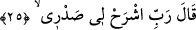

çobanların kullandığı bir âlettir. Mûsâ (a.s.) da çobandı. Allah onu çobanlık âleti ile
gönderdi. Yine Fir’avn eşeklik mertebesindeydi. Onun için asâya ve dövülmeye muhtaç
oldu.
Mesnevî’de şöyle denilir:
Aklın varsa sana lütuflarda bulundum...
Eşeksen eşeğe de asayı getirdim.
Seni bu ahırdan öyle bir çıkarırım ki
Sopayla başını, kulağını kanlara boyarım!
Bu ahırdaki eşekler de senin cefandan
Aman bulamıyorlar insanlar da!
İşte sevilmeyen her eşeği yola getirmek,
Terbiye etmek için sopa getirdim ben!
Seni kahretmek için o sopa, bir ejderha kesilir...
Çünkü sen de işte ve huyda bir ejderha kesilmişsin.
Sen amansız bir dağ ejderhasısın
Ama gökyüzü ejderhasına da bak!
Bu sopada cehennemden bir hisse var...
Kendine gel de aydınlığa kaç.
Yoksa benim dişlerimin arasında kalırsın...
Benim kahrımdan seni kimse kurtaramaz demektedir.
Bu, bir sopayken şimdi ejderha olmuştur,
Allâh’ın cehennemi nerede demeyesin diye.
Cennetle cehennem nerede diye sormaz,
Allâh’ın kudretini bilip tanıyan.
Allah, nereyi isterse orasını cehennem yapar...
Gökyüzünün yücelerini kuşa tuzak haline getirir.
Dişlerine öyle bir ağrı verir ki
Bu diş ağrısı cehennem, ejderha dersin.
Yahut da tükürdüğünü bal haline kor...
Bu, cennet ve cennet elbiseleri dersin!
Dişlerinin dibinden şeker bitirir...
Bu sûretle kaderin hükmünü anlar bilirsin!
Şu halde dişlerinle suçsuzları ısırma...
Çekinemeyeceğin, kurtulamayacağın silleyi düşün.